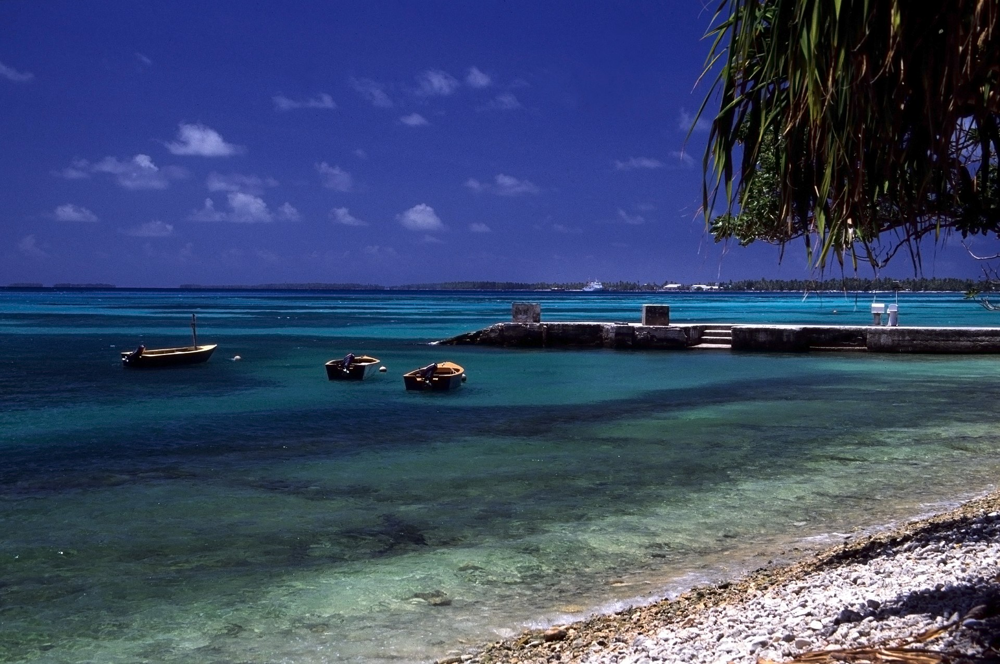
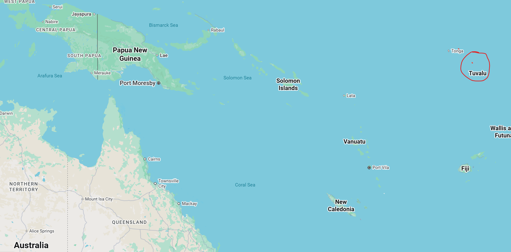
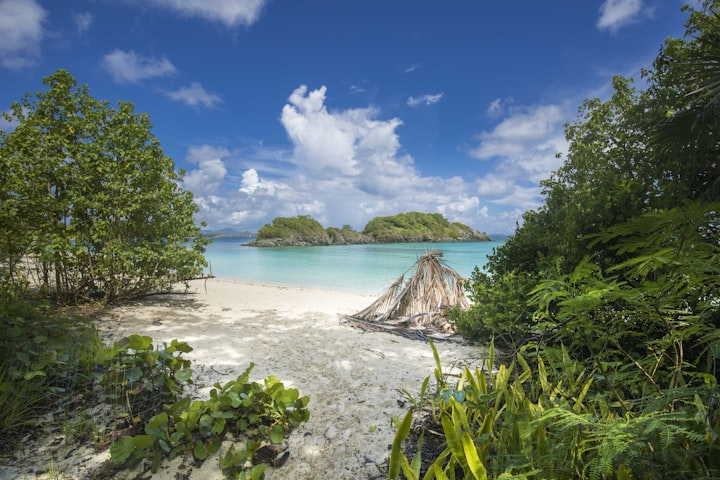
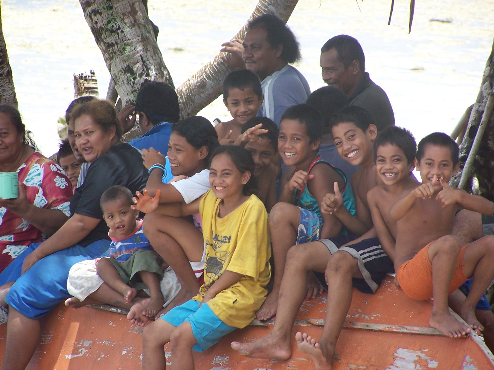

Slide 1 / 8
Tuvalu & Sea Level Rise
An Existential Global Citizenship Case Study
Prepared by: Student Names | Class: Citizenship 9
Focus Issue: Climate Change Adaptation & Sovereignty
Focus Issue: Climate Change Adaptation & Sovereignty
Country Profile: Tuvalu
Nine Islands, One Resilient Community
Slide 2 / 8
- Unique Geography: Made up of nine small coral atolls and reef islands in the Western Pacific, halfway between Australia and Hawaii.
- Extreme Elevation Limits: Extremely narrow landmass totaling only 26 km²; average height is just 1.5 meters above sea level.
- Cultural Heritage: Deeply collaborative Polynesian society governed by traditional village elders (Falekaupule) and the community spirit of "Soli".
- National Economy: Relies on coastal fishing, foreign development aid, worker remittances, and leasing its ".tv" internet domain code.

Sources: (1) CIA World Factbook (2024) — Tuvalu Country Profile. (2) SPREP (2021) — Tuvalu Regional Environment Assessment.
APA Style Citation
The Global Issue: Sea Level Rise
Greenhouse Warming and Oceanic Thermal Expansion
Slide 3 / 8
Global emissions raise atmosphere temperatures, causing polar ice sheet melt and water volume expansion.
- Accelerated Local Rate: Sea levels around Tuvalu have risen by 15 cm since 1993 (~5 mm/year), significantly exceeding the global average of 3.4 mm/year.
- Inundation Timeline: Scientific forecasts project that 50% of the capital, Funafuti, will experience daily tidal flooding by 2050.
- Soil Salinization: Saltwater penetrates porous coral bedrock, destroying freshwater resources and ruining traditional pulaka taro crops.

5mm
Annual Rise
50%
Flooded by 2050
2m
Avg Elevation
Sources: (1) NASA Sea Level Change Portal (2023) — Regional Projections. (2) IPCC Special Report (2021) — Oceans and Cryosphere.
APA Style Citation
Tuvalu's Adaptation and Diplomacy
Engineering Protection and Innovating Statehood
Slide 4 / 8
- Tuvalu Coastal Adaptation Project (TCAP): A $38.9M GCF-funded initiative that reclaimed 7.3 hectares of land in Funafuti, raised 3.5m high to build safe zones.
- Climate Diplomacy: Joined the UN in 2000 to advocate for global targets. Led campaigns to enforce the Paris Agreement 1.5°C threshold.
- Metaverse Preservation: Developing a digital replica of the country's geography, language, and culture to retain legal sovereignty if physical land is lost.
- The Falepili Union (2023): Historic treaty providing 280 Tuvaluans annually with migration pathways to Australia, while Australia funds coastal works.

Sources: (1) TCAP Technical Report (2023) — UNDP. (2) Australian DFAT (2023) — The Australia-Tuvalu Falepili Union Treaty.
APA Style Citation
Evaluating the Consequences
Intended Outcomes, Side Effects, and Time Horizons
Slide 5 / 8
Intended Consequences (Successes)
- Coastal Defense: Raised reclaimed land protects core government and residential areas from storm surges.
- Sovereignty Claims: Legal push secures international agreements recognizing Tuvalu's maritime zones regardless of land loss.
Unintended Consequences (Challenges)
- Coastal Wave Redirection: Solid seawall barriers reflect wave energy, worsening erosion on nearby sandy shores.
- Dietary Shifts & Health: Crop loss forces reliance on imported processed food, driving high rates of diabetes.
- Social Fabric Strain: Migration pathways split extended families, draining younger workers to Australia.
Sources: (1) SPREP Coastal Vulnerability Study (2022). (2) UN ReliefWeb Pacific Mobility Report (2023).
APA Style Citation
Comparison: Tuvalu vs Canada
Shared Threat, Unequal Capacity and Responsibilities
Slide 6 / 8
| Dimension | Tuvalu | Canada |
|---|---|---|
| Key Actions | Coastal defense construction (TCAP), migration treaty with Australia, digital statehood. | National Adaptation Strategy ($1.6B), CAN-EWLAT coastal planning tools, coastal dikes. |
| Adaptation Budget | Extremely low; reliant on international climate funds. | High-income country; massive domestic public funding. |
| Existential Risk | High (Existential): Risk of total country loss and population resettlement. | Medium (Regional): Protects localized coasts (e.g. Richmond, BC; Atlantic dikes). |
| Historical Footprint | Less than 0.001% of global emissions; zero fossil fuel exports. | Among the top historical per-capita carbon emitters globally. |
Sources: (1) ECCC National Adaptation Strategy (2022). (2) Global Affairs Canada (2023) — Pacific Climate Finance & Kiwa Initiative.
APA Style Citation
Reflection: Why Should Canadians Care?
Global Interconnection and Climate Justice
Slide 7 / 8
- Atmospheric Unity: Carbon emitted by Canadian vehicles and industries directly accelerates thermal expansion drowning Tuvalu.
- Shared Coastlines: Canada has the world's longest coastline. Sea level rise threatens Nova Scotia and Richmond, BC, making adaptation learnings mutually valuable.
- Development Partnerships: Canada supports the Pacific regional **Kiwa Initiative**, demonstrating that Canadian aid directly funds nature-based adaptation.
Global Citizenship Task:
Tuvalu emitted virtually nothing but faces loss of its land, while Canada is historically a high carbon emitter. Reflect: What responsibility does Canada hold to assist island nations, and how does the atmosphere connect our futures?
Sources: (1) NCCEH Evidence Review (2023) — Community Adaptation. (2) Global Affairs Canada (2023).
APA Style Citation
References & Authoritative Sources
Citing High-Quality Global Evidence
Slide 8 / 8
- Australian Government DFAT. (2023). Australia-Tuvalu Falepili Union treaty. https://www.dfat.gov.au/
- Environment and Climate Change Canada. (2022). Canada's National Adaptation Strategy. Government of Canada.
- Global Affairs Canada. (2023). Canada's international climate finance program: Support for the Pacific region.
- NASA Sea Level Change Portal. (2023). Sea level rise projection tool: Tuvalu. NASA.
- Tuvalu Coastal Adaptation Project. (2023). TCAP implementation report. UNDP.

Model Bibliography Slide — Include a references page at the end of your Country Profile Project.
APA Style Citations